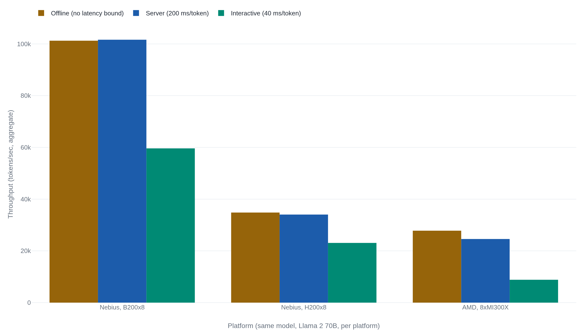

Groq's 270 tokens a second and Anyscale's 185 are both true
The 85-token-per-second gap between them comes down to where Groq starts its stopwatch and how long the test runs, one of at least four choices that decide what any published tokens-per-second figure means.
Why this matters
Every model launch and every inference vendor now leads with a speed number: 250 tokens per second, 1,000-plus, "the fastest model available." It reads like a spec sheet figure, until two honest sources measure the same system and land 85 tokens per second apart, the way Groq's own dashboard and an independent tester did on the same Groq service. This lesson works out where that gap comes from. By the end, you can take any tokens-per-second claim and ask four questions. Which phase was timed. How many requests shared the chip. Whose tokenizer counted. What hardware and prompt length produced the run.
- 01
- The instant a model writes a token, it becomes fact: why a model writes one token at a time and cannot skip ahead.
- 02
- A model can recognize strawberry's letters and still miscount them: how a tokenizer cuts text into chunks.
The number Groq quotes, and the number Anyscale measured
Groq's own dashboard reports its chips run Llama 2 70B at 270-plus tokens per second per user, a figure it has used to market its inference engine since 2024.1 Anyscale tells a different story. It built a tool called LLMPerf to check vendor throughput claims, pointed it at the same Groq service running the same model, and measured a median of 185 tokens per second.2 Both are real measurements of the same system.
The instinct is to treat one number as honest and the other as spin. That assumes a chip has a single speed, the way a car has one top speed. It does not. A tokens-per-second figure depends on which phase is timed, how many requests share the chip during the test, whose definition of "a token" is counting, and what hardware, precision, and prompt length produced the run. The Groq-Anyscale gap comes from exactly one of these.
Where the stopwatch starts
A model produces an answer in two phases that behave nothing alike. First it reads the prompt: every prompt token is already known, so the chip processes all of them in one parallel matrix multiplication. This phase is called prefill.3 Then it writes the answer one token at a time, and each new token depends on every token before it. That dependency is why decoding cannot be sped up by computing two tokens at once, the mechanic the earlier lesson on how a model generates one token at a time works through. Decode is the phase that produces most of a request's total latency.3
Two clocks separate the phases. Time to first token, TTFT, measures how long a request waits for the first output token, mostly prefill. Everything after that is decode, and its per-token rate is the number most "tokens per second" claims describe, only for what happens after TTFT, not the request end to end.4
This is exactly the gap between Groq's number and Anyscale's. Groq's 270-plus figure starts the clock after the first token and averages over a roughly 1,000-token completion, pure decode speed once the prompt-processing cost is paid.1 Anyscale's LLMPerf test used shorter completions, about 150 output tokens, and folded prompt-processing time into the same per-token average instead of splitting it out. Median time to first token on Groq's service was 0.22 seconds.2 Spread a fixed startup cost over 150 tokens instead of 1,000 and the average falls, roughly the size of the 270-to-185 gap. Groq says as much itself: "if you were to test with 1000 output tokens, the result would be closer to the 270+ tokens/s per user you see on groq.com."1 Neither side is wrong. They answered different questions with the same words.
More users, less speed each
The default guess is that tokens per second is a property of the chip, the way clock speed is a property of a CPU. It is not. It is a property of how many requests share that chip at once, and the same hardware running the same model reports very different numbers depending only on that count. MLPerf's own audited results make the range visible directly. 20 hardware platforms in the same round report throughput for the identical Llama 2 70B model under three latency policies, and on every one, tightening the policy cuts throughput by roughly a third to two-thirds.5

Batching raises the total because it reclaims the efficiency prefill already had: the chip multiplies a whole batch of thin per-token vectors at once, the same weights doing more work per pass. vLLM, the system that popularized this, reports 2 to 4 times the throughput of earlier serving software at the same latency.3
What the total hides is what one person feels, and there the direction reverses. A GPU splits its attention across every request each decode step. More riders mean a longer wait for the next token.
MLPerf sets an explicit floor on that wait. Its Server scenario requires a system to answer randomly timed requests within a latency bound. The bound MLCommons set for Llama 2 70B in 2024 was 200 milliseconds per token, anchored to "approximately 240 words per minute," an average adult's reading speed: about 5 tokens a second per user.67 By 2025 MLCommons judged that floor too slow for real chat use. It added a tighter Interactive scenario: 40 milliseconds per token, a floor of 25 tokens per second per user.8
One of the platforms in the chart above makes the arithmetic concrete. A system built from eight Nebius B200 GPUs sustains 101,611 tokens per second under the looser Server bound and 59,622.7 under the Interactive bound. A 41 percent drop on identical silicon, with nothing changed but how many tokens per second must reach each user.5 Loosen the bound and the system can batch more work into each step, so total output climbs; tighten it and that room shrinks.
The tokenizer, the chip, and the prompt length
A token is not a fixed unit of text. It is whatever chunk a tokenizer cuts the input into, and different models use different tokenizers, the mechanic the earlier lesson on tokenization works through. Artificial Analysis, an independent benchmarking firm, runs every model's output through one shared tokenizer, OpenAI's tiktoken, "because different tokenizers create pricing [and count] incomparability across models."9 Two models producing the identical sentence can report different token counts for it. Two tokens-per-second numbers are not comparable unless both sides count the same way, or someone normalizes them.
Even holding the model, the text, and the tokenizer fixed, hardware moves the number just as far. Artificial Analysis's own measurements of Llama 3.1 70B, run through an identical test across providers, found output speeds from 37.9 tokens per second on one DeepInfra configuration to 119.6 on Amazon Bedrock's latency-optimized tier. A threefold spread on the same weights, driven by serving stack and quantization: the reduced precision a provider stores weights in to trade accuracy for speed.10 Context length is a fourth lever. NVIDIA's own H200 benchmarks report a 1.9x speedup over the prior H100 on a 2,048-input summarization job, and a smaller 1.6x on an 80-input chat exchange. The two examples also differ in model and parallelism, not context length alone, so neither isolates length by itself.11 Even so, the two figures agree on the shape of the effect: speed at 1,000 tokens of context and speed at 100,000 are not the same claim, even from the same chip.
The audited number and the marketing number
MLPerf exists because the industry needed one audited way to settle this. MLCommons, the nonprofit that runs it, publishes its rules and reviews every submission. Its Inference benchmark defines three scenarios for one task. Single-Stream sends one query at a time, latency only, no throughput figure. Offline issues every sample as one giant batch with no latency limit, the largest, most quotable number, and the condition live traffic never meets. Server sits between them: queries arrive at random, and the reported figure is the fastest rate the system sustains inside the latency bound above.6 One model, one machine, three legitimate numbers.
NVIDIA supplies a case where a headline figure and an audited figure appear to disagree and, once normalized, do not. Ahead of MLPerf's 2025 round, NVIDIA told reporters a full rack of its GB200 systems, 72 GPUs, reached 869,200 tokens per second on Llama 2 70B. IEEE Spectrum flagged the figure as unverified, distinct from "the officially reported MLPerf benchmarks."12 NVIDIA's own audited submission, an 8-GPU B200 system reviewed by MLCommons the same round, reported 98,858 tokens per second under Offline.13 Divide each by its GPU count and the two land close: about 12,357 tokens per second per GPU audited, versus about 12,072 for the rack. What differed was procedural: one figure went through MLCommons's review and one did not.
Cerebras holds up under the same scrutiny. Its Llama 3.1 70B chips launched at 450 tokens per second per user in August 2024. The company later reported 2,100 for the same model after adding speculative decoding, both figures labeled "output speed per user," a single-stream number, not an aggregate.14 Cerebras pointed to Artificial Analysis as the party that "rigorously tested" the update, with its own disclaimer: "20% higher or lower... is normal."15 A peak number can be real and narrow at once, if the vendor names the conditions.
The costlier version of this problem is not one buyer fooled by one company. It is a market comparing hardware on throughput measured at an interactivity level no shipped product would use. SemiAnalysis built an open benchmark, InferenceMAX, for exactly this. A GPU that wins on aggregate throughput at 5 tokens per second per user, a speed the group calls "far too slow to be practical" for a chatbot, is not winning at anything a user would run.16 MLCommons made the same correction from the standards side, adding the Interactive scenario because the old 5-tokens-per-second floor "no longer represented" real chat use.8 Both built new instruments for one reason: the old number was read at a speed nobody would accept.
| Claim | Number | What produced it |
|---|---|---|
| Groq | 270+ tok/s | Decode only, after first token, ~1,000-token completion.1 |
| Anyscale | 185 tok/s | Same Groq service; TTFT folded in, 150-token completion, 5 concurrent requests.2 |
| Cerebras | 2,100 tok/s | Single-stream, speculative decoding, third-party tested.15 |
| NVIDIA (press) | 869,200 tok/s | Offline, batch aggregate, 72-GPU rack, not audited.12 |
| NVIDIA (MLPerf) | 98,858 tok/s | Offline, batch aggregate, 8-GPU system, audited.13 |
| MLPerf Interactive | 59,622.7 tok/s | Same 8-GPU class, audited, 25-tok/s-per-user floor enforced.5 |
The takeaway
Groq's 270 and Anyscale's 185 were never in conflict. They answered different questions about the same service: decode speed measured after the first token, against a test that folds the wait for it into the average. NVIDIA's audited 98,858 and its own unverified 869,200 agreed too, once someone divided by GPU count. A published tokens-per-second figure describes one specific run. It is not a fixed property of the chip.
The next time a launch or a chip vendor states a bare tokens-per-second figure, the number by itself is not yet an answer. Ask what phase it timed, how many requests shared the chip, whose tokenizer counted, and what hardware and context length produced it. Only once those four are named does the figure describe anything you can compare to your own workload.
- 01
- MLPerf Inference rules (MLCommons): the full scenario and latency-bound definitions this lesson quotes from.
- 02
- InferenceMAX (SemiAnalysis): the open benchmark built to catch throughput cited at unrealistic interactivity levels.
Sources
- Groq · Groq LPU™ Inference Engine Crushes First Public LLM Benchmark (2024)
- Anyscale/Ray · LLMPerf leaderboard (ray-project/llmperf-leaderboard)
- Kwon et al. · Efficient Memory Management for Large Language Model Serving with PagedAttention (2023)
- NVIDIA · NIM for LLMs, Optimization (docs, v1.0.0)
- MLCommons · MLPerf Inference v5.1 results (summary_results.json)
- MLCommons · MLPerf Inference rules (inference_policies)
- MLCommons · Llama 2 70B: An MLPerf Inference Benchmark for Large Language Models (2024)
- MLCommons · MLPerf Inference v5.0 Advances Language Model Capabilities for GenAI (2025)
- Artificial Analysis · Language Model API Performance Benchmarking (methodology)
- Artificial Analysis · Llama 3.1 70B, provider comparison
- NVIDIA/TensorRT-LLM · H200 launch performance blog
- IEEE Spectrum · Nvidia Blackwell Ahead in AI Inference, AMD Second (2025)
- NVIDIA · NVIDIA Blackwell Delivers Massive Performance Leaps in MLPerf Inference v5.0
- Cerebras · Introducing Cerebras Inference: AI at Instant Speed (2024)
- Cerebras · Cerebras Inference now 3x faster: Llama3.1-70B breaks 2,100 tokens/s (2024)
- SemiAnalysis · InferenceMAX: Open Source Inference Benchmarking (2025)